Computer Science and Software Development Khoa học máy tính và Phát triển phần mềm
How algorithms and well-structured code turn ideas into software that works. Cách thuật toán và mã nguồn được tổ chức tốt biến ý tưởng thành phần mềm hoạt động được.
Academic Portfolio Hồ sơ học thuật
Grade 12 student · Yen Hoa High School, Hanoi, Vietnam Học sinh lớp 12 · Trường THPT Yên Hòa, Hà Nội, Việt Nam
A curious mind, a passion for technology, and a commitment to solving real-world problems. Một tư duy ham học hỏi, niềm đam mê công nghệ và mong muốn giải quyết những vấn đề thực tế.
I am interested in Computer Science and Artificial Intelligence, exploring how technology can be transformed into practical solutions that make a meaningful difference. Tôi quan tâm đến Khoa học máy tính và Trí tuệ nhân tạo, đồng thời tìm hiểu cách biến công nghệ thành những giải pháp thiết thực có ích cho cộng đồng.
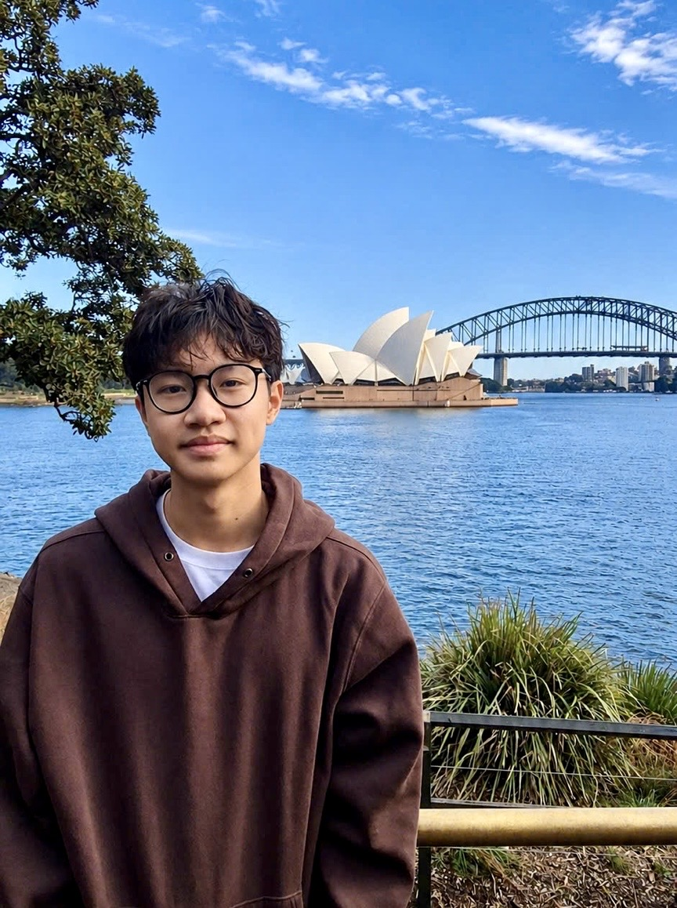
I am a Grade 12 student at Yen Hoa High School in Hanoi, Vietnam. I am interested in Computer Science, Artificial Intelligence and technology research. Tôi là học sinh lớp 12 Trường THPT Yên Hòa, Hà Nội, Việt Nam. Tôi quan tâm đến Khoa học máy tính, Trí tuệ nhân tạo và nghiên cứu công nghệ.
[In your own words: how you became interested in these fields.] [Bằng lời của bạn: điều gì khiến bạn quan tâm đến các lĩnh vực này.]
How algorithms and well-structured code turn ideas into software that works. Cách thuật toán và mã nguồn được tổ chức tốt biến ý tưởng thành phần mềm hoạt động được.
How computers learn patterns from data, and how these methods can be used in practice. Cách máy tính học các quy luật từ dữ liệu và cách áp dụng những phương pháp này vào thực tế.
How technology can help with practical challenges that people face in daily life. Cách công nghệ có thể hỗ trợ giải quyết những thách thức thực tế mà mọi người gặp phải trong cuộc sống hằng ngày.
I learn in several different ways, both in and outside the classroom: Tôi học hỏi theo nhiều cách khác nhau, cả trong và ngoài lớp học:
[A short example in your own words: something one of these experiences taught you.] [Một ví dụ ngắn bằng lời của bạn: điều bạn học được từ một trong những trải nghiệm này.]
I am interested in studying Computer Science and in exploring how technology can address meaningful real-world challenges. Tôi mong muốn theo học ngành Khoa học máy tính và tìm hiểu cách công nghệ có thể góp phần giải quyết những thách thức có ý nghĩa trong thực tế.
[Specific fields or questions you would like to explore further.] [Những lĩnh vực hoặc câu hỏi cụ thể bạn muốn tìm hiểu sâu hơn.]
I hope to use technical knowledge, research and collaboration to develop solutions that are useful to society. Tôi mong muốn vận dụng kiến thức kỹ thuật, nghiên cứu và sự hợp tác để phát triển những giải pháp hữu ích cho xã hội.
[An area or community you would most like to contribute to.] [Lĩnh vực hoặc cộng đồng bạn muốn đóng góp nhiều nhất.]
2024 – 2026
Personal reflection Suy ngẫm cá nhân
“A late start does not limit what I can achieve.” “Một khởi đầu muộn không giới hạn những gì mình có thể đạt được.”
I only made a real decision to pursue studying abroad in the second semester of Grade 11. That meant I had considerably less time to prepare my application, take part in academic competitions and complete the certificates I needed. While many students begin building their profiles in Grade 10, I had to reach most of these goals in roughly a third of the usual timeline. Tôi chỉ thực sự đưa ra quyết định theo đuổi con đường du học từ học kỳ II năm lớp 11. Điều đó đồng nghĩa với việc tôi có ít thời gian hơn đáng kể để chuẩn bị hồ sơ, tham gia các cuộc thi học thuật và hoàn thiện những chứng chỉ cần thiết. Trong khi nhiều học sinh thường bắt đầu xây dựng hồ sơ từ năm lớp 10, tôi phải hoàn thành phần lớn những mục tiêu này trong một khoảng thời gian chỉ bằng khoảng một phần ba lộ trình thông thường.
It was not a small challenge. I had to set my goals quickly, make a plan and prioritise many tasks at once, while still keeping up with my classes and school activities as a Grade 12 student. The process asked me to be fully focused, to take more initiative, and to be more disciplined in how I used my time. Đây là một thử thách không nhỏ. Tôi phải nhanh chóng xác định mục tiêu, xây dựng kế hoạch và sắp xếp thứ tự ưu tiên cho nhiều công việc cùng lúc, đồng thời vẫn đảm bảo việc học tập trên lớp và các hoạt động ở trường của 1 học sinh lớp 12. Quá trình đó đòi hỏi tôi phải tập trung hoàn toàn, chủ động và kỷ luật hơn trong cách sử dụng thời gian.
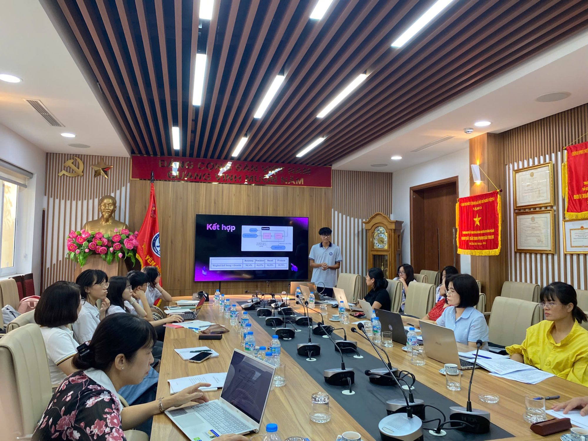
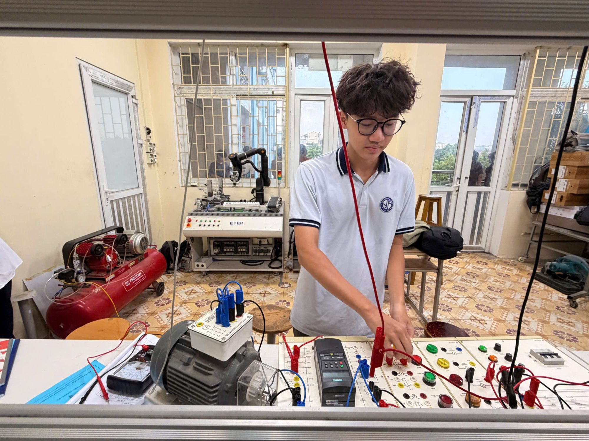
Although the preparation time was tight, I tried to make the most of every opportunity to learn, to test myself and to gain experience. I value the results from this period, but perhaps the greater value lies in what the journey itself taught me: adapting to change, managing several goals at the same time, and staying committed to the plans I had set. Dù thời gian chuẩn bị khá gấp rút, tôi đã cố gắng tận dụng từng cơ hội để học hỏi, thử sức và tích lũy kinh nghiệm. Những kết quả đạt được trong giai đoạn này là điều tôi trân trọng, nhưng có lẽ giá trị lớn hơn nằm ở những gì tôi học được từ chính hành trình đó: khả năng thích nghi trước những thay đổi, quản lý nhiều mục tiêu song song và kiên trì theo đuổi kế hoạch đã đặt ra.
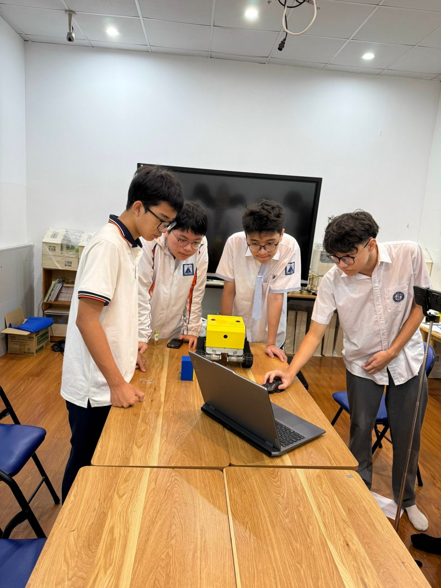
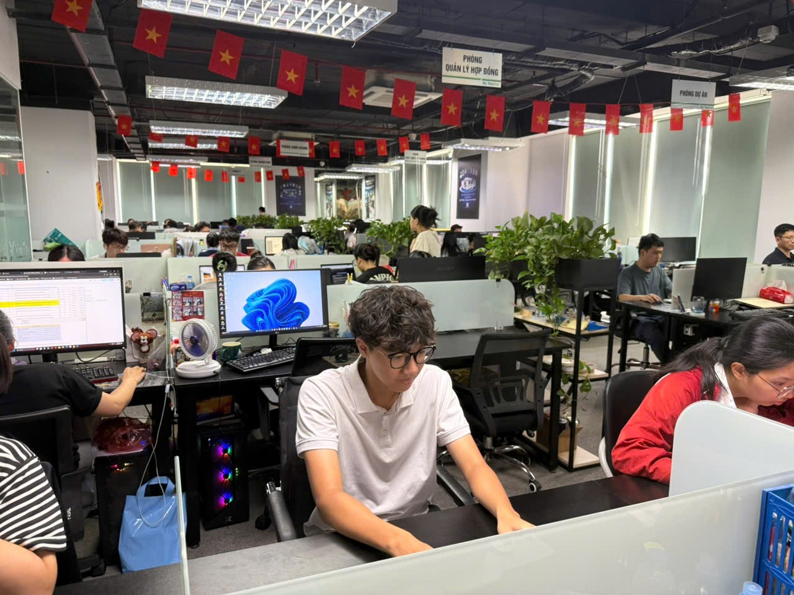
Looking back, I understand that a late start does not limit what I can achieve. What matters is knowing where I want to go, focusing on what needs to be done, and giving my best in the time I have. The results we receive will always reflect the effort we put in. Nhìn lại, tôi hiểu rằng một khởi đầu muộn không giới hạn những gì mình có thể đạt được. Điều quan trọng là biết mình muốn đi đâu, tập trung vào những việc cần làm và nỗ lực hết khả năng trong khoảng thời gian mình có. Kết quả nhận được sẽ luôn xứng đáng với những nỗ lực mình đã bỏ ra
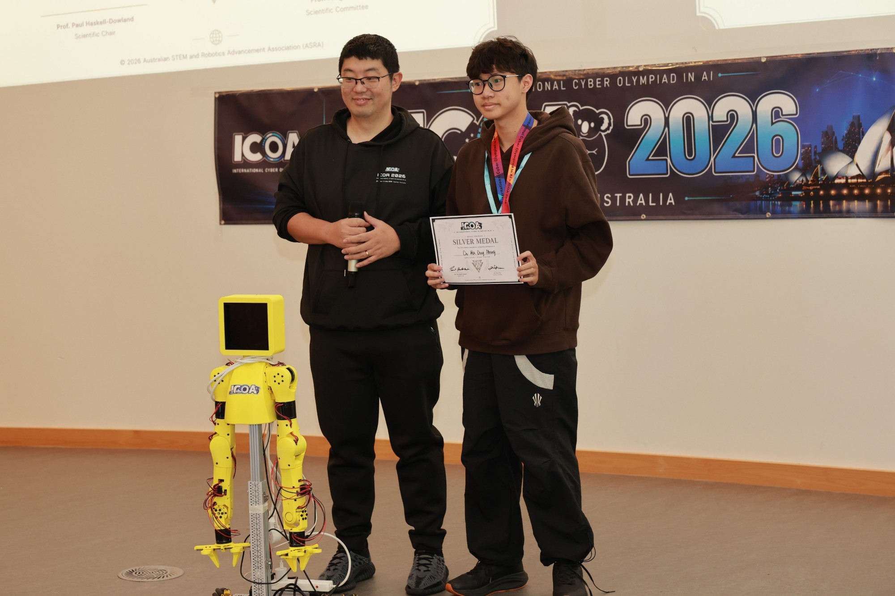
Timeline 2024 – 2026 Dòng thời gian 2024 – 2026
Grade 10Lớp 10
A New Chapter Begins – A Journey from Achievement to New Aspirations Một chương mới bắt đầu – Từ thành quả hôm nay đến những mục tiêu mới
2024 marked an important turning point in my academic journey. Năm 2024 đánh dấu một bước ngoặt quan trọng trong hành trình học tập của tôi.
I graduated from Doan Thi Diem Secondary School with an Excellent Graduation Classification, bringing my lower secondary school years to a meaningful close. Tôi hoàn thành chương trình trung học cơ sở tại Trường THCS Đoàn Thị Điểm với xếp loại tốt nghiệp Giỏi, khép lại những năm tháng học tập ở bậc THCS bằng một kết quả đáng tự hào.
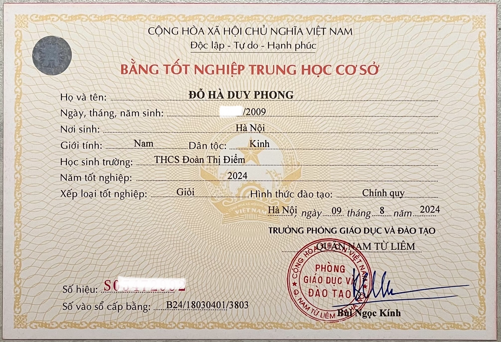
That summer, I took Hanoi’s highly competitive Grade 10 public high school entrance examination and achieved 45.50 out of 50 points. Mùa hè năm ấy, tôi tham gia kỳ thi tuyển sinh vào lớp 10 THPT công lập tại Hà Nội và đạt 45,50/50 điểm.
My results across the three subjects were: Kết quả cụ thể của ba môn thi:
More than 105,000 candidates participated in Hanoi’s 2024 entrance examination. According to statistics published after the examination, 1,925 candidates achieved 45 points or above. With my score of 45.50, I was among this high-scoring group, representing approximately the top 2% of candidates. Trong kỳ thi năm 2024, Hà Nội có hơn 105.000 thí sinh tham dự. Theo thống kê được công bố sau kỳ thi, có 1.925 thí sinh đạt từ 45 điểm trở lên. Với kết quả 45,50 điểm, tôi nằm trong nhóm thí sinh có điểm số cao này, tương đương khoảng top 2% thí sinh có điểm xét tuyển cao nhất toàn thành phố.
I was admitted to Yen Hoa High School through my first-choice preference. With an initial admission cutoff of 42.50 points, one of the highest in Hanoi that year, my result exceeded the school’s cutoff by 3 points. Tôi trúng tuyển Trường THPT Yên Hòa với nguyện vọng 1. Năm đó, điểm chuẩn ban đầu của trường là 42,50 điểm, thuộc nhóm cao nhất Hà Nội. Kết quả của tôi cao hơn điểm chuẩn của trường 3 điểm.
Looking back, this achievement was more than just a successful entrance examination. It was the beginning of a new chapter, bringing new challenges, opportunities, and ambitions. Nhìn lại, đây không chỉ là thành quả của một kỳ thi tuyển sinh, mà còn là khởi đầu cho một chặng đường mới với nhiều thử thách, cơ hội và mục tiêu lớn hơn.
I was ready to step into Yen Hoa, continue learning, explore my interests, and discover how far I could go. Tôi đã sẵn sàng bước vào Yên Hòa, tiếp tục học hỏi, khám phá những lĩnh vực mình yêu thích và thử sức với những giới hạn mới của bản thân.
Hello, Yen Hoa! Here I come! Chào Yên Hòa, mình đến đây!
First Prize in Informatics, Excellent Student Competition for Grades 10–11, Thanh Xuan – Cau Giay High School Cluster (school year 2024–2025) Giải Nhất môn Tin học, Kỳ thi Học sinh giỏi các môn văn hoá lớp 10, lớp 11 Cụm trường THPT Thanh Xuân – Cầu Giấy, năm học 2024–2025
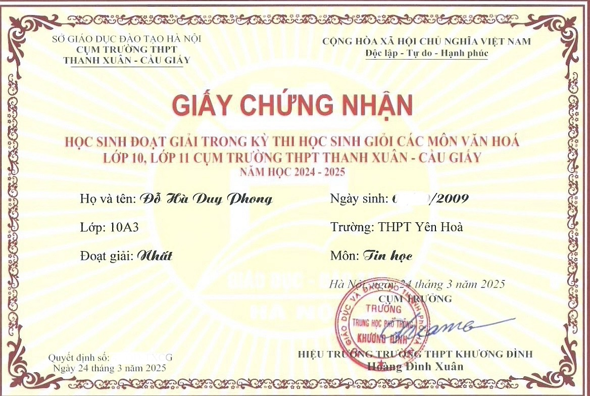
Grade 11Lớp 11
Second Prize in Informatics, Excellent Student Competition for Grades 10–11, High School Cluster No. 4 (school year 2025–2026) Giải Nhì môn Tin học, Kỳ thi Học sinh giỏi các môn văn hoá lớp 10, lớp 11 Cụm trường THPT số 04, năm học 2025–2026
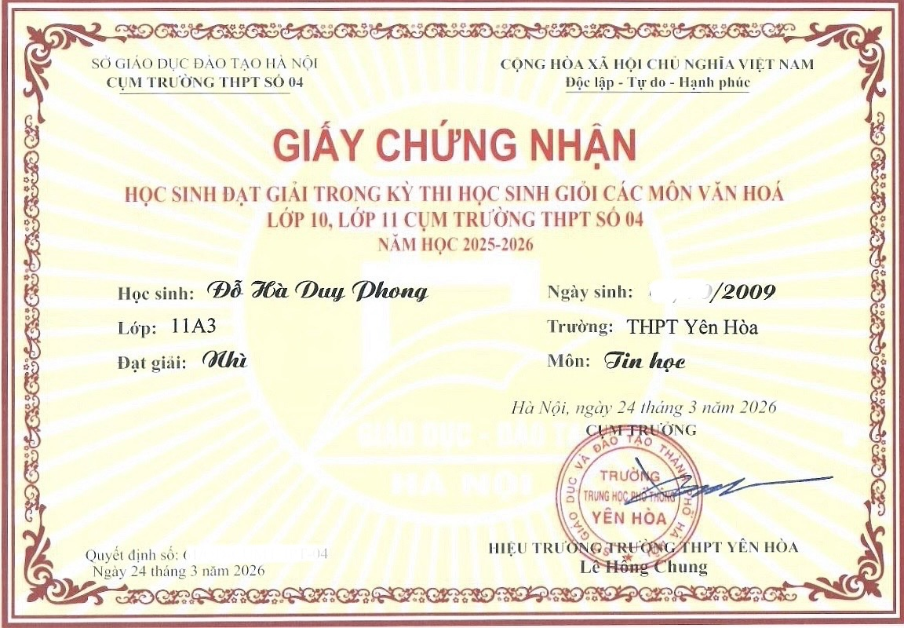
Participated in Praelux, an AI anti-scam project Tham gia Praelux, dự án AI chống lừa đảo
Grade 12Lớp 12
First Prize, Hanoi City Informatics Excellent Student Competition Giải Nhất, Kỳ thi Học sinh giỏi môn Tin học cấp Thành phố Hà Nội
Silver Medal, ICOA 2026, Australia Huy chương Bạc, ICOA 2026, Úc
Third Prize, Green Intelligence Challenge 2026: Innovating with AI! — awarded to the Praelux project team (£500 prize) Giải Ba, Green Intelligence Challenge 2026: Innovating with AI! — trao cho nhóm dự án Praelux (giải thưởng 500 bảng Anh)
Third Prize, FIREGUIDE intelligent rescue robot project — [competition name] Giải Ba, dự án robot cứu hộ thông minh FIREGUIDE — [tên cuộc thi]
Research and technical projects I have worked on. Team projects are clearly labelled. Các dự án nghiên cứu và kỹ thuật tôi đã tham gia. Dự án nhóm được ghi rõ.
Featured project Dự án nổi bật
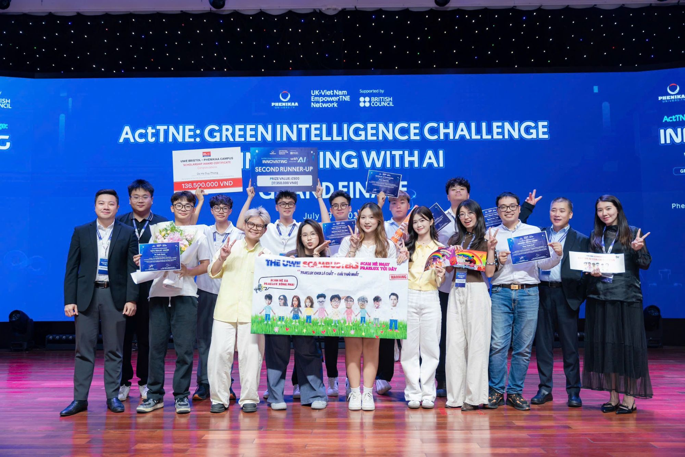
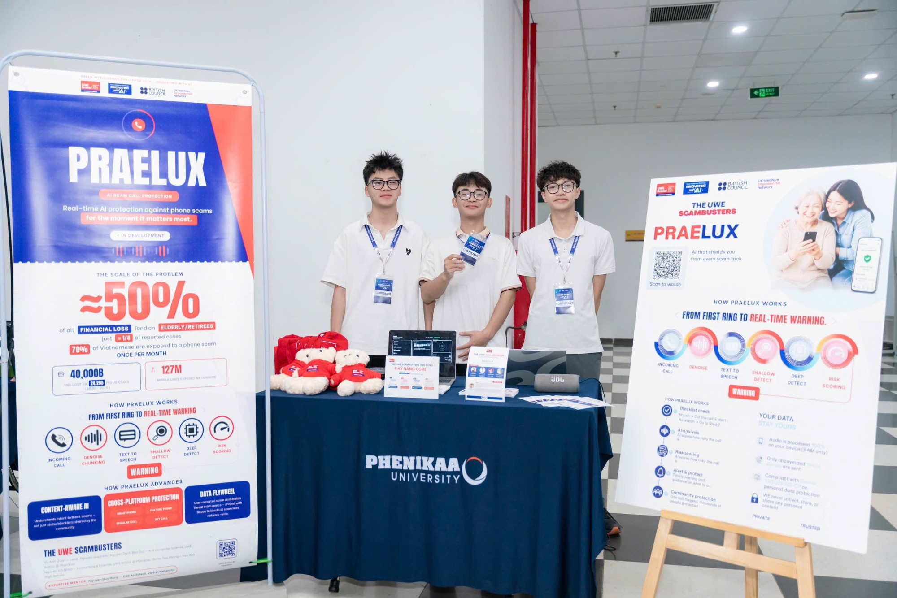
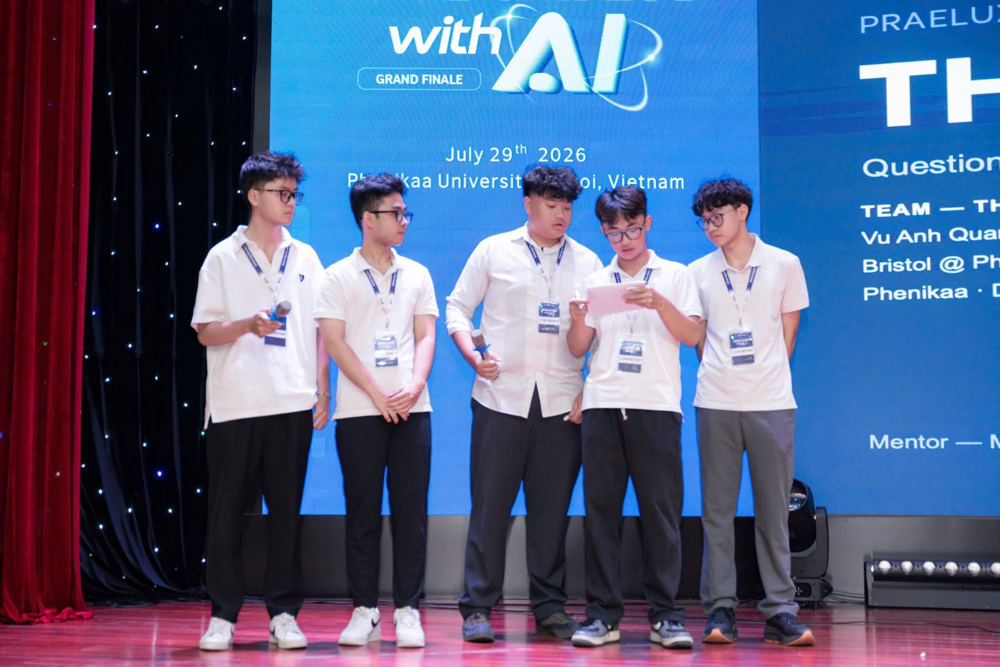
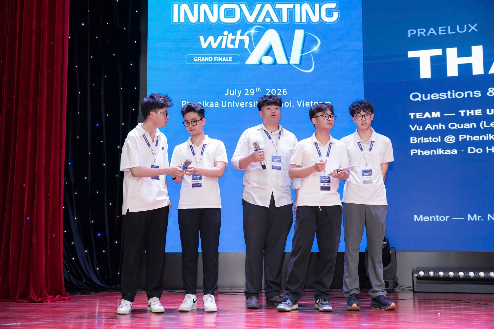
Exhibition booth and questions from the judges on stage, 29 July 2026 Gian trưng bày và phần hỏi đáp với ban giám khảo trên sân khấu, 29/7/2026
AI-powered real-time scam call detection. Phát hiện cuộc gọi lừa đảo theo thời gian thực bằng trí tuệ nhân tạo.
How can AI help detect scam phone calls while the call is happening? [Add why this problem matters, in your own words.] Làm thế nào để AI hỗ trợ phát hiện cuộc gọi lừa đảo ngay trong lúc cuộc gọi đang diễn ra? [Bổ sung lý do vấn đề này quan trọng, bằng lời của bạn.]
To give people a real-time warning during a phone call, from the first ring, when the call may be a scam — with older people, who are often targeted, in mind. Cảnh báo người dùng theo thời gian thực ngay trong cuộc gọi, từ hồi chuông đầu tiên, khi cuộc gọi có dấu hiệu lừa đảo — đặc biệt hướng tới người cao tuổi, nhóm thường bị nhắm đến.
Praelux checks a call step by step: it first compares the number with a blacklist of known scam numbers; it then reduces background noise, splits the audio into short segments and converts the speech to text; a quick first check is followed by a deeper AI analysis; finally the call receives a risk score, and the user is warned if it looks like a scam. Praelux kiểm tra cuộc gọi theo từng bước: trước tiên đối chiếu số gọi đến với danh sách đen các số lừa đảo đã biết; sau đó lọc nhiễu, chia âm thanh thành các đoạn ngắn và chuyển giọng nói thành văn bản; tiếp theo là bước kiểm tra nhanh rồi phân tích sâu bằng AI; cuối cùng cuộc gọi được chấm điểm rủi ro và người dùng được cảnh báo nếu có dấu hiệu lừa đảo.
Audio is processed on the user’s own device, and only anonymised data is sent. Âm thanh được xử lý ngay trên thiết bị của người dùng, và chỉ dữ liệu đã ẩn danh mới được gửi đi.
[Programming languages, models and tools used.] [Ngôn ngữ lập trình, mô hình và công cụ đã sử dụng.]
Third Prize, Green Intelligence Challenge 2026: Innovating with AI! — team award, £500 prize. Grand Finale: 29 July 2026, Phenikaa University, Hanoi. Giải Ba, Green Intelligence Challenge 2026: Innovating with AI! — giải của nhóm, giải thưởng 500 bảng Anh. Vòng chung kết: 29/7/2026, Trường Đại học Phenikaa, Hà Nội.
[What the project achieved and what you learned from it.] [Kết quả dự án đạt được và điều bạn học được.]
More projects Các dự án khác
Intelligent fire rescue and evacuation robot. Robot thông minh hỗ trợ cứu hộ và sơ tán khi xảy ra hỏa hoạn.
How can a robot support rescue and evacuation during a fire? Làm thế nào để robot hỗ trợ cứu hộ và sơ tán khi xảy ra hỏa hoạn?
[What the robot was designed to do.] [Robot được thiết kế để làm gì.]
[Hardware, sensors, software and programming languages used.] [Phần cứng, cảm biến, phần mềm và ngôn ngữ lập trình đã sử dụng.]
Third Prize (team award) — [competition name] Giải Ba (giải của nhóm) — [tên cuộc thi]
[What you learned from the project.] [Điều bạn học được từ dự án.]
Comparing keyword-based and semantic search models for Vietnamese news. So sánh mô hình tìm kiếm theo từ khóa và mô hình tìm kiếm ngữ nghĩa đối với tin tức tiếng Việt.
How do keyword-based and semantic search models compare when searching Vietnamese news? [Refine the exact question if needed.] Mô hình tìm kiếm theo từ khóa và mô hình tìm kiếm ngữ nghĩa khác nhau như thế nào khi tìm kiếm tin tức tiếng Việt? [Điều chỉnh câu hỏi chính xác nếu cần.]
[What the research aimed to find out.] [Nghiên cứu nhằm tìm hiểu điều gì.]
[Dataset, models compared, evaluation method and tools used.] [Bộ dữ liệu, các mô hình được so sánh, phương pháp đánh giá và công cụ đã sử dụng.]
[Main findings and what you learned.] [Kết quả chính và điều bạn học được.]
Skills & independent learning Kỹ năng & tự học
[e.g. languages you use regularly] [Ví dụ: các ngôn ngữ bạn thường dùng]
[AI / ML libraries, hardware, other tools] [Thư viện AI / học máy, phần cứng, công cụ khác]
[Online courses, books or topics you studied on your own] [Khóa học trực tuyến, sách hoặc chủ đề bạn tự tìm hiểu]
Silver Medal Huy chương Bạc
I received a Silver Medal at the International Cyber Olympiad in AI (ICOA) 2026, held in Sydney, Australia, from 28 June to 2 July 2026. Tôi đạt Huy chương Bạc tại Kỳ thi Olympic Quốc tế về Trí tuệ nhân tạo ICOA 2026, tổ chức tại Sydney, Úc, từ ngày 28/6 đến ngày 2/7/2026.
I competed as a member of Team Vietnam. The Silver Medal itself is an individual award: it recognises my own performance in the olympiad and was presented to me personally. Tôi tham dự kỳ thi với tư cách thành viên Đội tuyển Việt Nam. Bản thân Huy chương Bạc là giải thưởng cá nhân: huy chương ghi nhận kết quả thi của riêng tôi tại kỳ thi và được trao trực tiếp cho tôi.
ICOA 2026 is described by its organisers as the world’s first AI security olympiad for secondary school students. The competition was held entirely in a command-line interface (CLI) and had three parts: AI4CTF (“AI is your teammate”), CTF4AI (“AI is your target”) and CTF4EAI, a pioneer round (“AI is embodied”). Theo ban tổ chức, ICOA 2026 là kỳ thi Olympic về an ninh trí tuệ nhân tạo đầu tiên trên thế giới dành cho học sinh trung học. Toàn bộ cuộc thi diễn ra trên giao diện dòng lệnh (CLI), gồm ba phần: AI4CTF (“AI là đồng đội”), CTF4AI (“AI là mục tiêu”) và CTF4EAI – vòng thi tiên phong (“AI hiện thân”).
Participants came from 19 teams across five continents, with Kuwait attending as an observer nation. Thí sinh đến từ 19 đội thuộc năm châu lục, cùng Kuwait tham dự với tư cách quốc gia quan sát viên.
[In your own words: how you prepared and what you learned.] [Bằng lời của bạn: bạn đã chuẩn bị như thế nào và học được gì.]
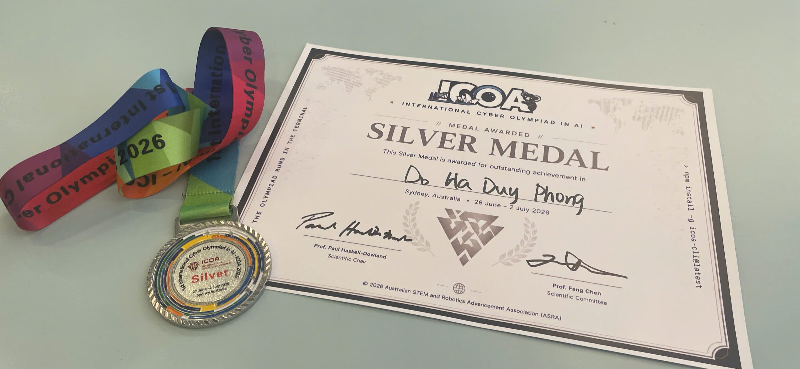
images/icoa-2026-certificate.jpg
images/icoa-2026-ceremony.jpg
Scholarship Học bổng
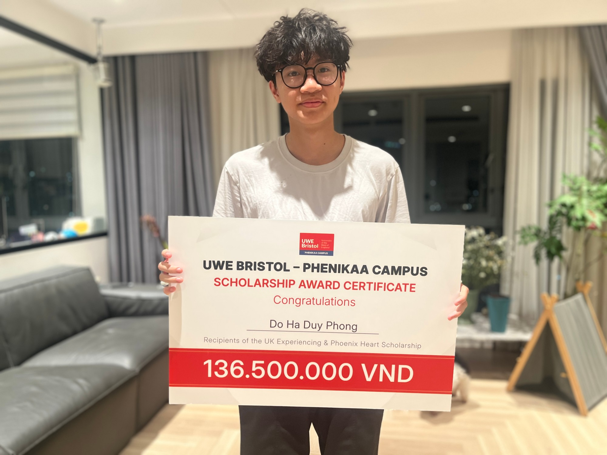
Scholarship · 2026 Học bổng · 2026
I received the UK Experiencing & Phoenix Heart Scholarship from UWE Bristol – Phenikaa Campus, with a value of 136,500,000 VND. Tôi nhận Học bổng UK Experiencing & Phoenix Heart của UWE Bristol – Phenikaa Campus, trị giá 136.500.000 VND.
[What the scholarship covers, if you would like to add it.] [Học bổng hỗ trợ những gì, nếu bạn muốn bổ sung.]
Other awards & results Các giải thưởng & kết quả khác
First Prize, Hanoi City Informatics Excellent Student Competition Giải Nhất, Kỳ thi Học sinh giỏi môn Tin học cấp Thành phố Hà Nội
Third Prize, Green Intelligence Challenge 2026: Innovating with AI! — Praelux project (£500 prize) Giải Ba, Green Intelligence Challenge 2026: Innovating with AI! — dự án Praelux (giải thưởng 500 bảng Anh)
Third Prize, FIREGUIDE intelligent rescue robot project — [competition name] Giải Ba, dự án robot cứu hộ thông minh FIREGUIDE — [tên cuộc thi]
Second Prize in Informatics, Excellent Student Competition for Grades 10–11, High School Cluster No. 4 (school year 2025–2026) Giải Nhì môn Tin học, Kỳ thi Học sinh giỏi các môn văn hoá lớp 10, lớp 11 Cụm trường THPT số 04, năm học 2025–2026
First Prize in Informatics, Excellent Student Competition for Grades 10–11, Thanh Xuan – Cau Giay High School Cluster (school year 2024–2025) Giải Nhất môn Tin học, Kỳ thi Học sinh giỏi các môn văn hoá lớp 10, lớp 11 Cụm trường THPT Thanh Xuân – Cầu Giấy, năm học 2024–2025
[Award, competition name and level] [Giải thưởng, tên cuộc thi và cấp độ]
[A short reflection on what you have learned during 2024–2026.] [Một đoạn suy ngẫm ngắn về những điều bạn đã học được trong giai đoạn 2024–2026.]
[Your goals for the future and what you hope to explore next.] [Mục tiêu tương lai và điều bạn muốn khám phá tiếp theo.]